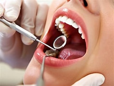

Nuestros Servicios Médicos
Tratamientos especializados adaptados a cada etapa de tu salud.

Medicina General
Consultas de prevención, diagnóstico y seguimiento para toda la familia.
Fisioterapia
Recuperación funcional, lesiones deportivas y dolores musculares crónicos.
Estética Dental
Tratamientos avanzados para cuidar tu sonrisa con la mejor tecnología.